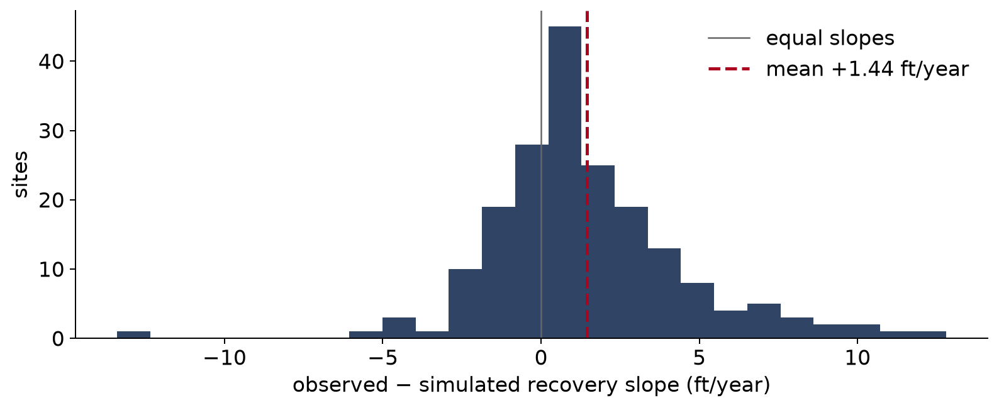
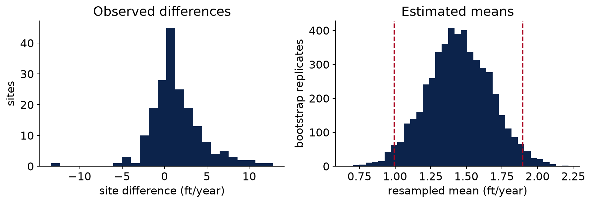
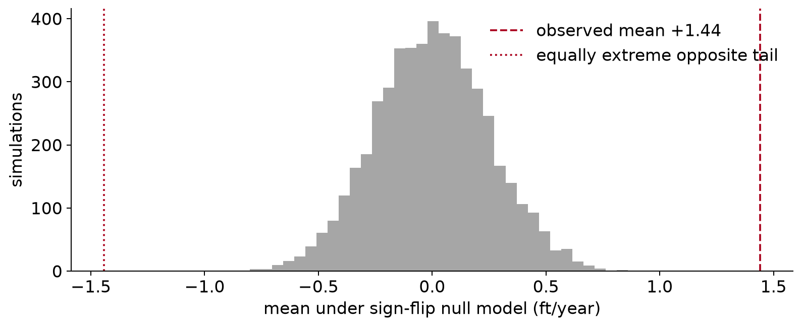

The Pinal recovery comparison
Does the model reproduce the recovery rates in its historical observations?
Today: describe the differences, estimate uncertainty, and examine a specified null model.
Open Lab 1 — Statistical evidence.
The notebook needs only the committed CSVs. No download or MODFLOW run.
Sample, population, and target quantity
| Sample |
191 qualifying monitored sites |
| Broader population |
Comparable sites we might want to describe |
| Statistic |
Mean observed–simulated slope difference in our sample |
| Target quantity |
Mean difference for a stated population of sites |
The records are not a random, area-balanced sample of the entire aquifer.
One site contributes one paired difference
Both slopes use the same observation times, during 1985 ≤ year < 2005.
A site needs at least 5 observations spanning 10 years.
\[d_i=b_{obs,i}-b_{sim,i}\qquad\text{[ft/year]}\]
Positive: the simulation has a smaller recovery slope.
Each site receives equal weight. Weighting by observation count answers a different question.
The differences vary substantially among sites

Mean +1.44 · median +0.95 · sample SD 3.15 ft/year
Your turn: calculate and interpret an effect
Illustrative eight-site data; use the full table in Lab 1, task 1.
Subtract simulated slopes from observed slopes, then average the differences.
import numpy as np
observed = np.array([1., 2., 4., 6., 0., 3., 5., 7.])
simulated = np.array([2., 2., 3., 4., 1., 2., 3., 4.])
d = observed - simulated
print("mean difference (ft/year):", d.mean())
The mean is +0.875 ft/year. This describes slopes; it does not establish an offset in head.
Uncertainty in the average
Spread and sampling uncertainty
Spread among sites: how different are their recovery discrepancies?
Uncertainty in the mean: how much might our estimate vary if we sampled comparable sites again?
A bootstrap resamples site differences with replacement, recalculating their mean each time.
The method approximates a sampling process; it does not create new field information.
Your turn: one bootstrap replicate
The data below are illustrative. Repeat this operation in Lab 1, task 3.
Keep the original sample size, allow repeats, and average the draw.
import numpy as np
d = np.array([-1., 0., 1., 2., -1., 1., 2., 3.])
rng = np.random.default_rng(56413)
sample = rng.choice(d, size=len(d), replace=True)
print("resampled values:", sample)
print("resampled mean:", sample.mean())
Resampled means have their own distribution

Same physical units; different quantities. The horizontal scales differ.
An approximate 95% interval
Mean gap +1.44 ft/year; percentile interval [+1.00, +1.90] ft/year.
The interval uses the 2.5th and 97.5th percentiles of resampled means.
A confidence procedure aims to cover the population quantity in 95% of repeated samples when its assumptions hold.
It does not contain 95% of individual site differences.
What the bootstrap leaves out
- Nearby wells may respond together: the independent-site assumption can fail.
- The network’s locations may not represent the broader aquifer.
- Site slopes have their own estimation errors.
- Groundwater-model inputs and structure have additional uncertainty.
This interval is an instructional calculation under independent-site sampling.
No systematic difference, with explicit assumptions
For a demonstration, assume independent differences symmetric around zero.
Conditional on each magnitude, positive and negative signs are equally plausible.
Random sign flips generate possible means under this null model.
A zero mean alone does not justify sign flipping. These observational data were not randomized.
The null distribution is centered near zero

The bootstrap estimates uncertainty around the observed effect; this simulation asks about a zero-centered null model.
Your turn: count both tails
Illustrative simulation output; Lab 1, task 4 uses 5,000 replicates.
Use the absolute values of the simulated means to include both tails.
import numpy as np
null = np.array([-1.4, -0.8, -0.3, 0., 0.1, 0.4, 0.9, 1.5])
observed_mean = 1.0
n_extreme = np.count_nonzero(np.abs(null) >= abs(observed_mean))
p = (n_extreme + 1) / (len(null) + 1)
print(n_extreme, p)
Two exceedances; p = 3/9. The +1 correction avoids reporting zero from finite simulation.
What a p-value can establish
Under the specified null model, how often is the statistic at least as extreme as the observed one?
For the illustrative Pinal sign-flip model: Monte Carlo p = 0.00020, using 5,000 simulations.
It is not the probability that the null is true, the effect size, or evidence identifying a cause.
A non-small p-value would not establish model agreement.
Detectability and hydrologic importance
A small discrepancy can be detectable with abundant independent information.
A consequential discrepancy can be difficult to detect with sparse or dependent observations.
Discussion: what decision would make a difference of 1 ft/year important? Over what duration could a constant-rate comparison be reasonable?
A conclusion with limits
Lab 1, final discussion · 65–75 minutes
- State the effect, sign, units, period, and sites described.
- Give the illustrative interval and independent-site assumption.
- Interpret the null-model result conditionally.
- Name a limitation on using this result for future predictions.
Thursday: the regressions and model errors behind these summaries.
References and data
Pinal HOB cache: data/cache/pinal_model_head_obs.csv.
Derived slopes: data/week13_pinal_recovery_slopes.csv; rebuild with python scripts/prepare_week13_data.py.
Conceptual sequence informed by Pestana, Lundquist, and contributors, Data Analysis in Water Sciences: sampling and distributions and Monte Carlo methods.
The paired Pinal investigation and independent-site bootstrap are instructional adaptations for this class.